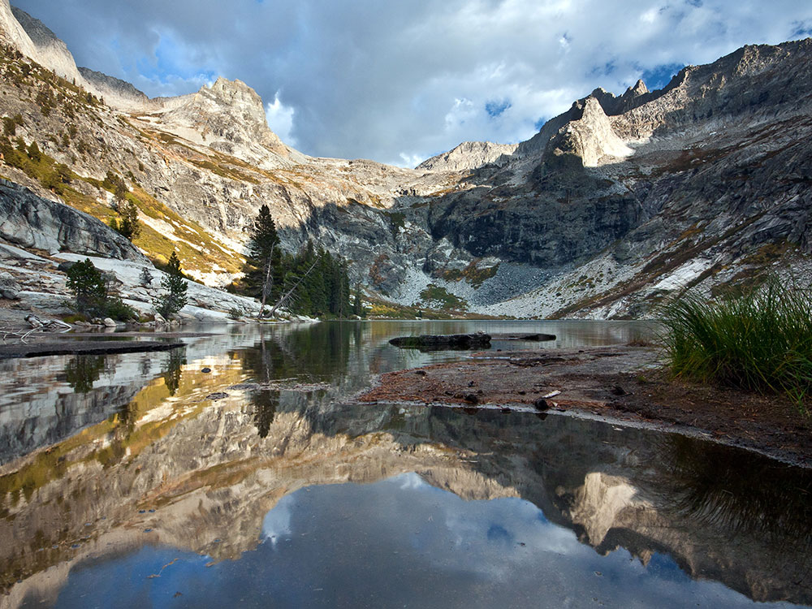

.jpg){kind=link}
Challenging alpine trail winding through granite cliffs, meadows, and forested terrain with access to multiple high-elevation lakes.
General Information
- Length:
- 12 miles roundtrip (to Pear Lake)
- Elevation Gain:
- 2,300 feet
- Difficulty:
- Strenuous
- Hours:
-
Open year-round, 24 hours a day
Trail conditions may vary seasonally; Watchtower Trail closed in winter - Fees:
-
Private Vehicle: $35 (valid for 7 days)
Motorcycle: $30
Individual (on foot or bicycle): $20
Annual Pass: $70
Backpacking Permit: $15 per trip + $5 per person (required for overnight camping) - Pet Policy:
- Pets are not allowed on any trails, including the Lakes Trail
- Seasons:
-
Best time to visit: Late spring through early fall (June–October)
Winter access via Hump Trail; snow and ice may require special gear - Location:
- Lakes Trail, Sequoia National Park, CA
- Website:
- nps.gov
How to Get There
From Foothills Visitor Center (22 mi): Take Generals Highway north for approximately 22 miles, then turn right onto Wolverton Road and follow signs to the Lakes Trail parking area.
Overview
The Lakes Trail is one of the most scenic hikes in Sequoia National Park, climbing from the Wolverton area to a chain of glacial lakes, Heather, Aster, Emerald, and Pear lakes, set in granite basins beneath the Tablelands. Along the way, the trail passes the Watchtower, a granite pinnacle with a dramatic view down into the Tokopah Valley. Hikers come for the lakes, the views, and the high-country scenery. No permit is required for a day hike, but overnight trips require a wilderness permit, and camping is allowed only at designated sites at Emerald and Pear lakes.
Getting to the Trailhead
Sequoia National Park is reached from Three Rivers on CA-198, which enters the park at the Ash Mountain Entrance and becomes the Generals Highway, a steep, winding road that climbs to the Giant Forest; vehicles longer than 22 feet are not recommended on the section between Potwisha Campground and the Giant Forest Museum. The park can also be reached from Fresno via CA-180 and the northern Generals Highway. The roads are paved, and an entrance fee is required. Snow can close or require tire chains on park roads in winter. The trailhead is at the Wolverton parking area, off Wolverton Road near the Giant Forest.
Trail Description
From the Wolverton parking area, the trail climbs through forest to a junction where hikers choose between the Watchtower Trail, which follows a ledge blasted into the cliff with dramatic views, and the Hump Trail, a steeper but less exposed route; the two rejoin near Heather Lake. The trail then continues past Aster Lake and Emerald Lake to Pear Lake, about 6 miles from the trailhead. Hikers return the same way, for a total of about 12 miles round trip.
Trail Conditions and Difficulty
The hike is strenuous, with about 2,300 feet of elevation gain. The Watchtower Trail has sheer drop-offs and is closed when covered by snow or ice; use the Hump Trail instead. At high elevations, the thin air makes climbing harder than many visitors expect, and afternoon thunderstorms are common in summer, so start early. Snow can linger on the trail into early summer.
This article uses material from the Wikipedia articles and official tourism pages for the Lakes Trail, which are released under the
